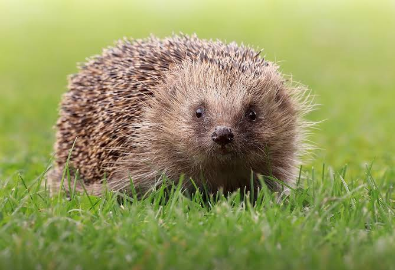

Erizo común
El erizo común, erizo europeo o erizo europeo occidental (Erinaceus europaeus) es una especie de mamífero erinaceomorfo de la familia Erinaceidae, anteriormente incluido dentro del antiguo orden Insectivora.
Al igual que el resto de erizos, posee una envoltura de pinchos formada por varios millares de púas rígidas, resultado de una modificación de la piel.
- Nombre cientifico: Erinaceus europaeus
- Familia: Erinaceidae
- Orden: Erinaceomorpha
- Clase: Mammalia
- Filo: Chordata
- Reino: Animalia
El erizo común es un animal nocturno que se alimenta de insectos, lombrices, caracoles y otros invertebrados. Su capacidad de enrollarse en una bola con los pinchos hacia afuera es su principal defensa contra depredadores.
El erizo común es un animal que se encuentra en gran parte de Europa y en algunas partes de Asia. Su hábitat incluye bosques, praderas y áreas urbanas donde puede encontrar alimento y refugio.
